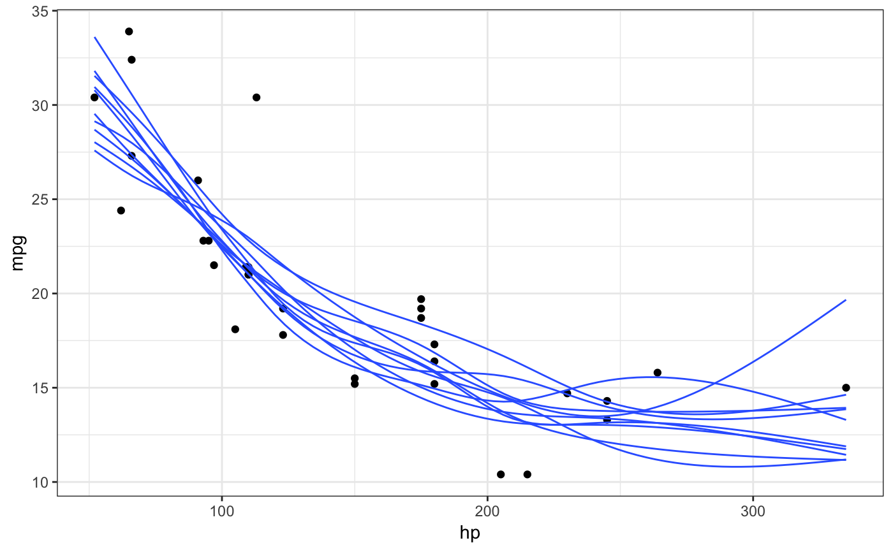
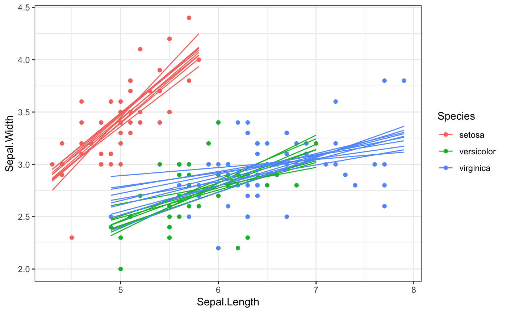

Generate outcome draws from a smooth fit. This stat is similar to stat_smooth(),
but there are a few important differences. First, there is no method argument.
Only smooth fits fitted via mgcv::gam() are currently supported. If you want a
linear fit, set a linear formula via formula = y ~ x. Second, there is no se
argument. This stat cannot draw confidence bands. See confidence_band() for a
workaround if you want to add confidence bands. Internally, the stat uses the
function sample_outcomes() to calculate outcomes.
stat_smooth_draws(mapping = NULL, times = 10, data = NULL, geom = "smooth", position = "identity", ..., formula = y ~ s(x, bs = "cs"), n = 80, fullrange = FALSE, gam.args = list(method = "REML"), na.rm = FALSE, show.legend = NA, inherit.aes = TRUE)
| mapping | Set of aesthetic mappings created by |
|---|---|
| times | Number of outcomes to draw. |
| data | The data to be displayed in this layer. There are three options: If A A |
| geom | Use to override the default connection between
|
| position | Position adjustment, either as a string, or the result of a call to a position adjustment function. |
| ... | Other arguments passed on to |
| formula | Formula to use in smoothing function. Default is
a cubic spline, |
| n | Number of points at which to evaluate smoother. |
| fullrange | Should the fit span the full range of the plot, or just the data? |
| gam.args | List of additional arguments passed on to the GAM call. |
| na.rm | If |
| show.legend | logical. Should this layer be included in the legends?
|
| inherit.aes | If |
This stat fits the gam with Restricted Maximum Likelihood (REML) and uses the
smoothing parameter uncertainty corrected covariance matrix to generate outcomes
(unconditional = TRUE in sample_outcomes()). If you choose a different gam
fitting method the stat sets unconditional = FALSE.
Note that for static plots, you will generally have to set the group
aesthetic appropriately (e.g., aes(group = stat(.draw))). However, for
animated plots you will normally not want to set the group aesthetic in
this way. To enable animations by default, stat_smooth_draws() does not
set a group aesthetic. See examples for further details.
library(ggplot2) # static plots, need to set group aesthetic manually ggplot(mtcars, aes(hp, mpg)) + geom_point() + stat_smooth_draws(aes(group = stat(.draw)), size = 0.5) + theme_bw()# if we want to group by multiple variables, we have to use their # mapped name (here, `colour` instead of `Species`) because we're # creating the groups after after initial data mapping ggplot(iris, aes(Sepal.Length, Sepal.Width, colour = Species)) + geom_point() + stat_smooth_draws( formula = y ~ x, aes(group = interaction(stat(.draw), colour)), size = 0.5 ) + theme_bw()# NOT RUN { # animated plots library(gganimate) ggplot(mtcars, aes(hp, mpg)) + geom_point() + stat_smooth_draws(size = 0.5) + transition_states(stat(.draw), 1, 2) ggplot(iris, aes(Sepal.Length, Sepal.Width, colour = Species)) + geom_point() + stat_smooth_draws(formula = y ~ x, times = 20, size = 0.5) + transition_states(stat(.draw), 1, 2) # }